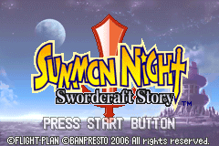

Summon Night - Swordcraft Story (USA)
EEPROM 64K
Cartridge Identity
- Game Code
AB4E(FamilyAB4)- Header Title
SUMMONIGHSCS- Maker / Revision
EB/ rev0- ROM Size
- 8.0 MiB (8,388,608 B)
- Save Media
EEPROM 64K- SHA-256
062ec81e9c354604bf0e05b3683476b691e763bdd4bf35fd44a14c5b2ceadad4- Engine / SDK Group
comm-001(196 families)
Screenshots

ROM Assets, Compression & Audio
- BIOS Compression
- LZ77 (
0x10): 3,216 streams · RLE (0x30): 0 streams - ROM Pointer Tables
- 92 tables (0 pointing to validated compressed streams)
- SDK Backup Tags
EEPROM_V124
Hardware MMIO Subsystems
ppu_display0x8007264,0x80078c0,0x800c674,0x800caf8,0x800eb04,0x800eb64,0x805e25c
Regional Variants & Revisions (Family AB4)
- Summon Night - Craft Sword Monogatari (Japan) (
AB4J, 8 MiB)